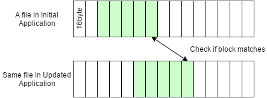
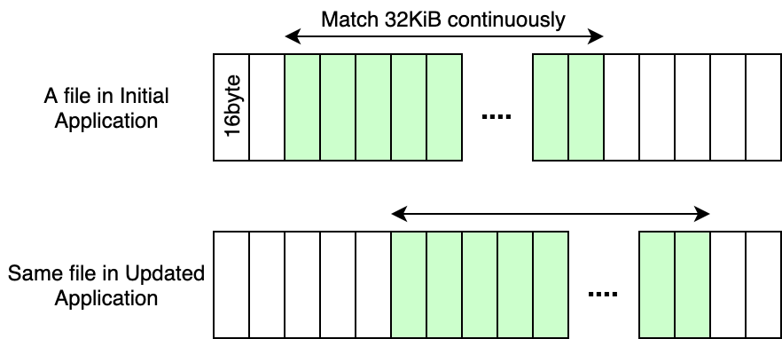

- Overview
- NX Patching Mechanism
- Conditions For Using a Partial File Patch
- Archiving Multiple Resources in the Application
- Displaying Information About Data Making Up a Large Proportion of Patches
Overview
This section provides information about reducing the size of patches.
To reduce patch size, you must effectively use the partial file patch ability provided by NX patches.
This page describes the conditions for using partial patches of files, and specific examples of how to meet those conditions.
It includes notes for reducing patch size when creating the initial application.
It also describes how to display information about what data a patch occupies, as you reduce its size.
NX Patching Mechanism
Conceptually, an NX patch is a mechanism for reading the unchanged data from the initial application and the changed data in the fixed version of the application from the patch.
As a result, the patch consists of the portion of the file data that was changed in the fixed version of the application. The specific data included is described in Conditions For Using a Partial File Patch.
Fragments
Data referenced in patches is managed by reference segment, as fragments.
Use the --patched-only-in-detail option of the list command in AuthoringTool to see the kinds of fragments included in the patch data.
Fragments can be checked using the fragmentation information displayed when the list command is run.
For more information about the Authoring Tool list command, see AuthoringTool > Displaying NCA and NSP File Content.
Conditions For Using a Partial File Patch
The conditions for using a partial file patch can be thought of as the conditions for referencing data from the initial application.
This description uses the term binary matching to refer to the process of searching for accessible data in the initial application. Creating a patch can be thought of as the process of using the initial application and the revised application as the inputs, performing binary matching on these inputs, and making a patch that collects together all the data for which references could not be found.
Conditions For Binary Matching
When all of the following conditions are met, the process of binary matching succeeds and the data from the initial application can be referenced.
- When the pre-revision and post-revision files are divided into 16-byte blocks, the blocks match up.

- When the matching segment continues for at least 32 KiB. This size can be modified by passing
--minimum-matching-sizetomakepatch.

This description uses an example to make this procedure easier to understand.
Where blocks in the initial file and the revised file match up at the binary level, the NX patch can reference the data of the initial application.
| Size of Matching Segment | Offset in Initial Version | Offset in Revised Version | Blocks to Reference From the Initial File | Description |
|---|---|---|---|---|
| 32KiB | 16 KiB | 16 KiB | The 32-KiB segment from 16 KiB | At least 32 KiB contiguous blocks, so the data can be referenced. |
| 32 KiB | 16 KiB | 20 KiB | The 32-KiB segment from 16 KiB | Can detect offsets that deviate in units of 16 bytes in the file, so the data can be referenced. |
| 32 KiB | 16 KiB | 0Byte | The 32-KiB segment from 16 KiB | Can detect even forward deviations, so the data can be referenced. |
| 32 KiB | 16 KiB | 20 KiB + 8 bytes | Cannot be referenced. | If there is a deviation of 8 bytes, blocks in 16-byte segments will not match and so cannot be detected. |
| 16 KiB | 16 KiB | 20 KiB | Cannot be referenced. | Matching blocks do not total 32 KiB, so the data cannot be referenced. |
| 32 KiB | 16 KiB + 8 Byte | 20 KiB + 8 bytes | Cannot be referenced. |
If the starting 8 bytes and the ending 8 bytes are considered a 16-byte block, there is no match. As a result, the matching size is less than 32 KiB and the data cannot be referenced. |
| 32 KiB + 16 Byte | 16 KiB + 8 bytes | 20 KiB + 8 bytes | The 32-KiB segment from (16 KiB + 16 bytes) |
In the preceding example, the matching size was less than 32 KiB so the data could not be referenced. But in the next example, with the extra matching block of 16 bytes, the data can be referenced. |
| 128 MiB | 16MiB | 20MiB | The 128-MiB segment from 16 MiB | Matching segments of more than 32 KiB are also possible. |
| 128 MiB + 16 Byte | 16 MiB | 20MiB | The (128 MiB + 16 byte) segment from 16 MiB | The size of the segment to reference can be greater than 32 KiB and a multiple of 16 bytes. |
The order of the matching segments does not need to be the same in the initial application and the revised application. As shown in the following examples, the segment either before or after the matching address can be referenced from the initial application.
| Size of Matching Segment | Offset in Initial Version | Offset in Revised Version | Blocks to Reference From the Initial File |
|---|---|---|---|
| 32 KiB | 16 KiB | 64 KiB | The 32-KiB segment from 16 KiB |
| 32 KiB | 128KiB | 16 KiB | The 32-KiB segment from 128 KiB |
Archiving Multiple Resources in the Application
This section describes a way to reduce the size of the patch when archiving multiple resources in a single file.
Consider it as a way to more easily satisfy the conditions described previously for using a partial file patch.
Aligning the Offsets in the Resource File to 16 Bytes
To enable referencing unchanged resources (of at least 32 KiB) in the initial application, we recommend aligning the offsets in the file that contains the resources to 16 bytes.
If this alignment is not made, the offset in the file with the resources may deviate by more than a multiple of 16 bytes between the initial application and the revised application, and it may not be possible to reference the data from the initial application.
Compressing in Small Units
Even a slight modification to binary data will result in fundamentally different binary data after it has been compressed. The NX patch mechanism will not be able to detect the differences, and all of the revised data will end up included in the patch.
By compressing the data in the smallest units possible, you can reduce the size of the patch.
For example, if you compress each resource and then archive them, only the differences in the revised files will be detected. On the other hand, if you archive the files and then compress the archive, the entire region will be detected as a difference.
Displaying Information About Data Making Up a Large Proportion of Patches
To reduce patch size, it is effective to enable partial patching of files for the data making up a large proportion of the patch.
You can check this using the analyze-patch command, so also refer to that command.
CONFIDENTIAL